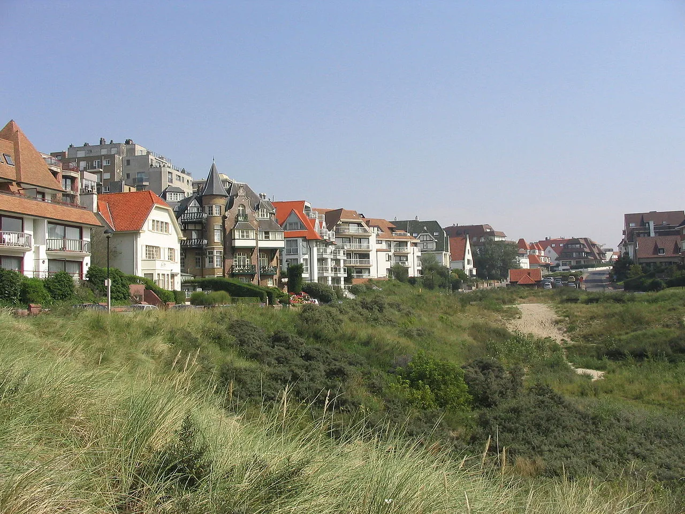
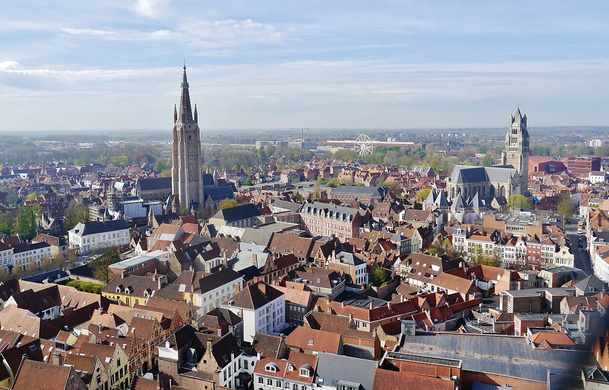
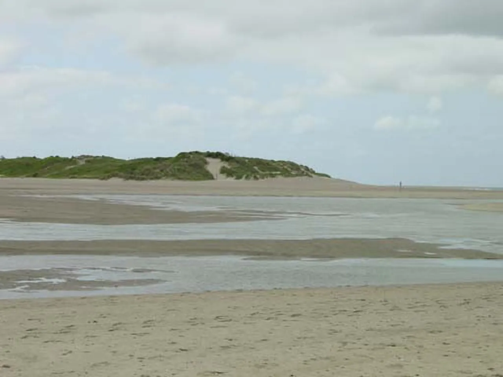
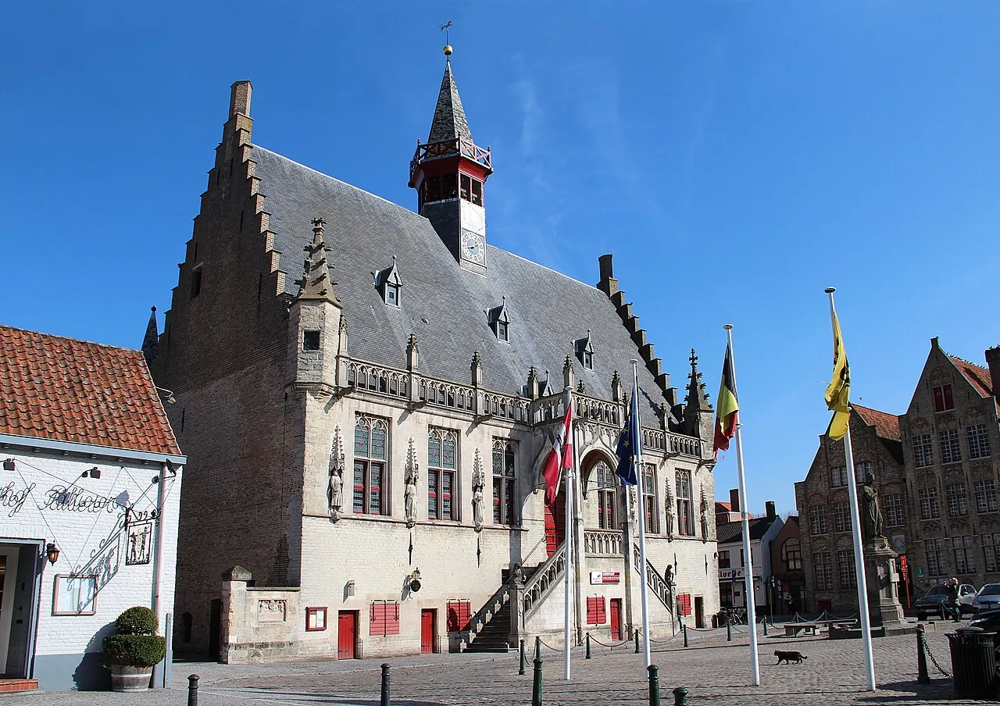
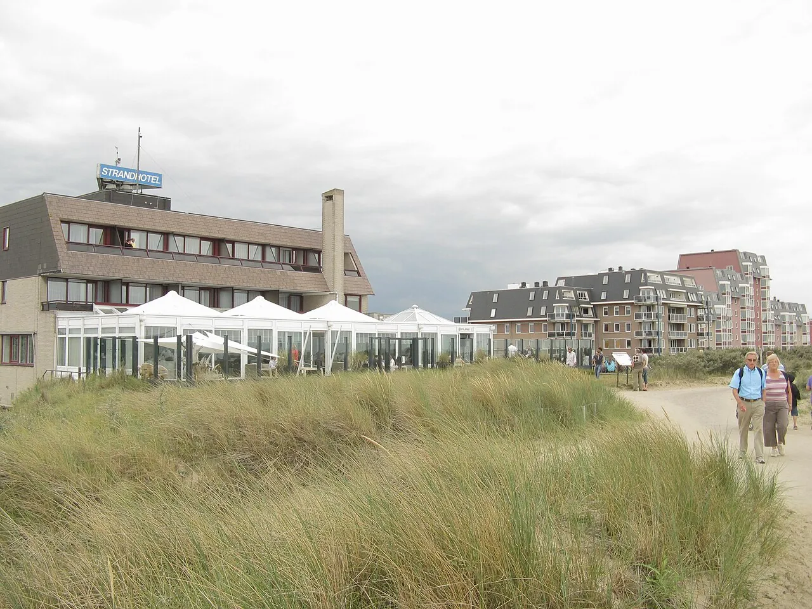
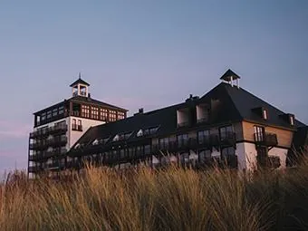

From Brussels via Bruges — the cross-coast spine. The station opens onto Maurice Lippensplein, and Smedenstraat curls off the same square [4].
Three names recur on both lodging shortlists: La Réserve, Britannia, Manoir du Dragon. All within an after-dinner walk of Cuines 33.
The most exclusive shopping street in Knokke — closed shops at dusk, lit windows, designer storefronts. Then drift toward Het Zoute's villas for the Anglo-Norman fantasy.
Grand Casino Knokke closes for full renovation early 2026 through ~2032 [25], so don't anchor evenings around it. Sea-dyke brasseries or the Lippenslaan retail strip carry Friday instead.
Tomorrow opens with a 38 km cycle to Damme or a 17-min train to Bruges, then peaks at 19:30 sharp. Sleep on the coast side, away from the Lippenslaan retail.
The 30 km activity circle clusters four ways: south to Bruges (the heavyweight, 17-min train), east to Zwin and the Dutch border, north into the polders, west along the Kusttram. Pick one; the others stay on the list.
Direct trains run hourly, 17 minutes, €5–8 [5]. Pre-book the Belfry climb [15]; canal-boat season runs daily from 13 Feb [13]. BRUSK — the new Musea Brugge gallery — opens 8 May 2026 [14].
Belgium's oldest White Stork colony, >300 bird species [19], a 1.7 km cabin trail and panorama tower. €12 online, €14 on site; summer 10:00–18:00 daily [17].
38 km of flat, poplar-lined towpath connecting Bruges to Knokke via Damme [20]. Damme is ~5 km north of Bruges on the canal [21]. Rent in town and ride.



Whatever you picked, leave 90 minutes' float before 19:30. The counter waits for no one.
Smedenstraat 33. Counter-only. Sixteen seats. Two stars in the 2026 Belgium & Luxembourg guide [1]. The whole weekend's compass needle.
The longest cycling path in town doubles as the longest stroll [34]. North wind, lit pavilions, the Casino building dark for the duration of the renovation.
Het Zoute is the chic eastern district — authentic villas, golf courses, top restaurants [30]. The unrushed start the weekend has earned.
A 4 m semi-paved cycling-and-walking path runs Knokke-Heist → Cadzand along the Zwin plain [22]. Bring a passport — the Marechaussee still runs non-systematic Belgian-border checks through mid-2026 [27].
Dune-line lunch on the Dutch side. Cadzand-Bad is a 17-min taxi from Knokke if you'd rather drive [18]. Heads up: Restaurant Demain (the one-star successor to Pure C) leaves Strandhotel Cadzand on 31 May 2026 [23] — verify before booking.


Elizabetlaan 160, beside the Zegemeer. Reopened 2023 after a Glenn Sestig overhaul — 1930s grandeur with eucalyptus, onyx, Art Deco motifs. 37 rooms [8].
Elizabetlaan 85. 1928 Anglo-Norman villa fully renovated in 2022; 36 rooms; private parking €30/day on reservation [9].
Albertlaan 73. 1927 manor as a 16-room boutique; adjacent to Royal Zoute golf; balconies, garden terrace, some rooms with fireplace [10].
Lippenslaan 35-37, opposite the market square — the same square the station opens onto. 50 rooms, rooftop terrace, town-hall parking at €25/day [6].
Construction begins early 2026, target reopening 2032. The building next to La Réserve is not an evening hub this decade [25]. Magritte's 360° Enchanted Domain mural is sealed inside [26].
The one-star successor to Pure C leaves Strandhotel Cadzand at end of May 2026 [23]. The Dutch-side design-restaurant story is in flux through summer.
Bruges' newest contemporary-art gallery opens 8 May 2026 [14]. If your Saturday falls after, it's a fresh anchor for a Bruges day-trip.
The Netherlands extended non-systematic Marechaussee checks at the Belgian border into mid-2026 [27]. The Knokke→Sluis crossing may involve a stop. Bring ID.